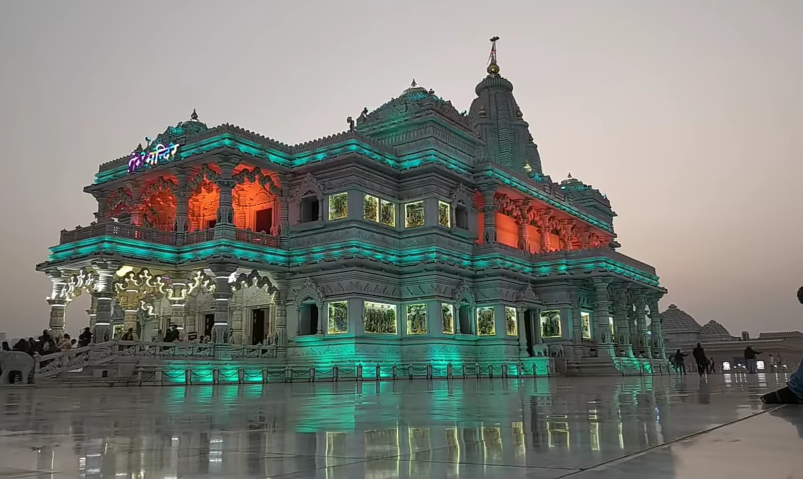

Discover the Beauty of Prem Mandir
Prem Mandir is a beautiful temple located in Vrindavan, a town near Mathura. The temple is dedicated to Lord Krishna and his consort, Radha. The temple is made of Italian marble and is adorned with intricate carvings and sculptures depicting scenes from Hindu mythology. The temple complex also includes a garden, fountains, and a museum. Prem Mandir is a must-visit attraction for anyone visiting Mathura and its surrounding areas.
Visitor Information
- Opening Hours: 5:30 AM to 12:00 PM, 4:00 PM to 8:30 PM
- Entry Fee: Free
- Dress Code: Decent attire (No short dresses or sleeveless shirts)
- Photography: Allowed inside the temple complex
- Best Time to Visit: Early morning or evening to avoid the crowd
How to Reach
Prem Mandir is located in Vrindavan, which is about 15 km from Mathura. You can reach Vrindavan by taxi, auto-rickshaw, or bus. The temple is about 2 km from the Vrindavan bus stand, and there are frequent buses and auto-rickshaws available from the bus stand to the temple. Alternatively, you can also take a shared auto-rickshaw or hire a private taxi from Mathura to reach Prem Mandir.